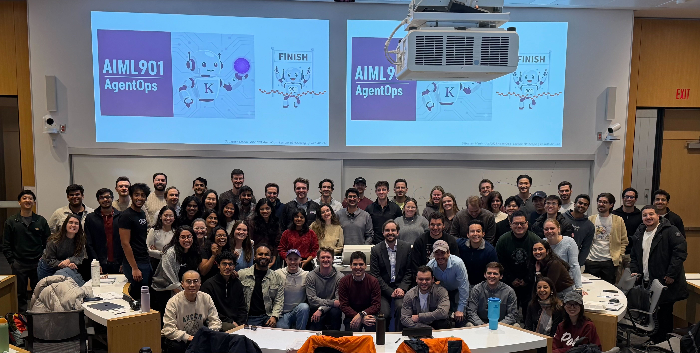
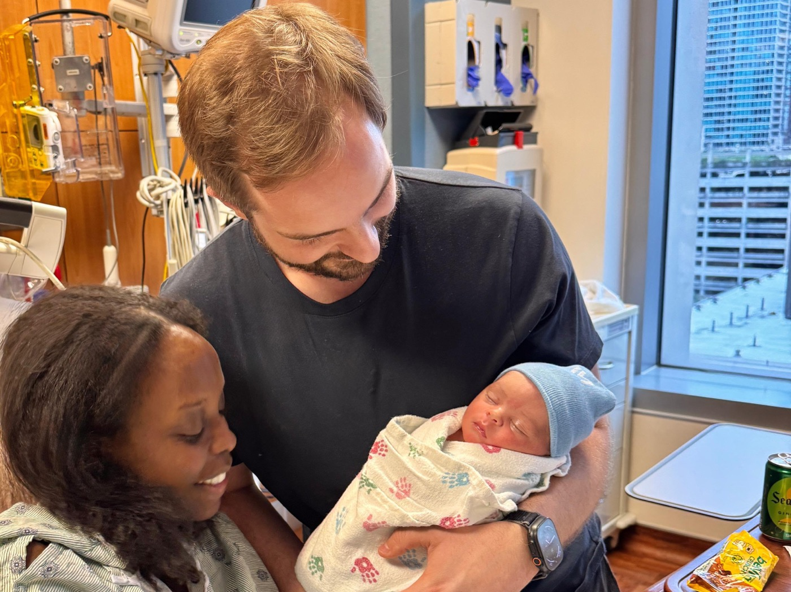
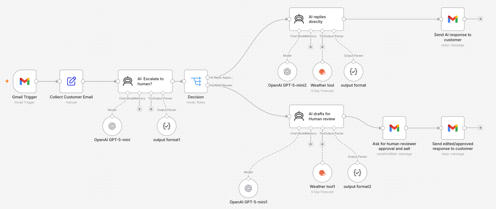

“AI Foundations for Managers” Leveraging AI to improve education
Industry
Board of Directors Focusing on AI strategy
My family
Our son was born on July 31. Figuring out what the world will be when he grows up.


Introduction
Why leaders should build
This program is about AI leadership, not technical skill. So why start by building?
Because you cannot lead what you have never touched. Building it yourself is the fastest way to see what an agent can and cannot do, and where a person has to stay in charge.
We will get our hands dirty. Some things will break. We will figure it out together.
Then
Lead
Would you deploy it? What changes in your organization?
Next
Decide
Where should AI act alone, and where do people stay in the loop?
First
Build
An AI agent, by hand, at the level only technical teams usually see
from the ground up
Introduction
Our morning
1
Hands-on agentic workflow design
we build a real AI agent together in n8n, no experience needed
2
Leveraging AI agents
now that we know what AI can do, how should we use it to really help the company, and where do people fit in?
3
Where are things going?
what changed in four years, what is coming next, and what you can do about it now.
PART 1 · UNTIL THE BREAK
Building AI workflows with n8n
The best way to understand the technology is to use it.
Building AI workflows with n8n
What is n8n?
An automation platform. You connect blocks into workflows that run on their own, with little or no code.
And one of the most widely used platforms for deploying AI agents in practice.
Building AI workflows with n8n
Skyline Experiences
Premium outdoor experiences, worldwide
Harbour sails and vineyard tours
Hot-air balloons and food tours
Their customers are always travelling, and the weather always matters.
Our goal
A customer-service AI agent for customers who have already booked an experience.
Building AI workflows with n8n
Build together · Your first AI agent
Follow along with me, step by step. Lost the thread? Pick up here:
Create your workflow. In the HMI Build your Agent project, click Create workflow and name it after yourself: firstname-lastname-agent1.
Add the agent. Click the +, type AI, and choose AI Agent. Close the window that opens.
Give it a brain. Under the agent, click the + next to Chat Model and choose OpenAI Chat Model. The key is already set up.
Talk to it. Click Open chat at the bottom and say hello. Then tell it your favorite color, and ask it back.
🎉 You just rebuilt ChatGPT (a very bad version of it).
Building AI workflows with n8n
What is an AI agent?
Building AI workflows with n8n
Build together · Instructions and a tool
Same workflow, keep following along. Lost the thread? Pick up here:
Copy the instructions. On our page, copy the block under “1 · Concierge prompt”.
Paste them in. Double-click AI Agent, click Add option → System message, replace “You are a helpful assistant” with what you copied, and close.
Test it. In the chat, ask: “Hi, who are you?”
Add a tool. Click the + next to Tool, search weather, choose OpenWeatherMap, and set it to the 5-day forecast. Next to City, click the ✨ button so the model picks the city.
Ask about the weather.“What should I pack for my balloon ride in Napa this weekend?” Then open the Logs.
🎉 A model, instructions, and a tool: that is the whole agent.
Building AI workflows with n8n
The ONLY three things you control
The model
The LLM, the large language model: the brain. Bigger and smarter, or cheaper and faster. Hosted by a provider, or run on your own machines. Many trade-offs.
The instructions
The system message. Information it was never trained on, and the rules you want it to follow.
The tools
What it can reach and act on. Like you, but with your phone in your hand.
Building AI workflows with n8n
Hands-on 1 · Make it yours
Edit the system message of the chat agent we just built, send a message, see what changes. Try a few, they get harder.
Change the way it speaks: warm, playful, five-star formal, or another language.
Give it facts about Skyline it can share.
Have it upsell another experience when it fits.
Tell it when to use the weather tool, not every time.
Make it always add a 3-day forecast for any city asked.
Swap the model for a smarter one: gpt-6-luna → gpt-6-terra. Do you see any difference?
Building AI workflows with n8n
Hands-on 2 · Give it an inbox
You can just follow along with me, step by step. Lost the thread? Pick up here:
Create your workflow. In n8n, open the HMI Build your Agent project, then add one named after yourself: firstname-lastname-agent2 (e.g. johnsmith-agent2).
Add the template. On this page, copy the code under “2 · Email agent” and paste it onto your workflow canvas.
Set your email. Open the Gmail Trigger node and replace YOUR_EMAIL_HERE@EMAIL.COM with your own address.
Email the agent. From that same address, write to aiml901sebastienmartin@gmail.com, then wait a minute.
Run it by hand. Click each box in order, waiting for the green check before the next.
Go live (optional). Click Publish and the agent runs on its own, checking for mail once a minute.
🎉 Congratulations, you've created an agentic workflow!
Building AI workflows with n8n
Would you deploy it?
Why, or why not?
Building AI workflows with n8n
Hands-on 3 · The full workflow
Set it up
Same process as the last slide, with a new workflow named after yourself: firstname-lastname-agent3 (e.g. johnsmith-agent3).
This time copy “3 · Human in the loop” from the page and paste it onto the canvas.
Set your email in the Gmail Trigger, as before.
Email the agent, then run each box by hand, or click Publish so it runs automatically on each new email.
Your inbox plays both parts: the customer who writes in, and the reviewer who approves the tricky ones.
Experiment with the AI instructions
Run the whole thing. Try to get one reply the AI sends directly, and one that goes to a human.
Make the router more cautious, so more emails go to a human.
Have the AI always add the customer's local weather forecast to its note for the reviewer.
Building AI workflows with n8n
So why did we do this?
What should it do?
Which tasks, with which information, in which tone.
When does it act alone?
And when should it hand the decision to a person?
Who stays in charge?
Who reviews, who decides, who is accountable.
AI is powerful, but it can't answer these for us. We need to understand it well enough to manage it, and to decide how humans and AI work together.
PART 2 · AFTER THE BREAK
Leveraging AI agents
Impressive is not the same as useful. How do we use AI to really help the company, and where do people fit in?
Leveraging AI agents
You just built this
A router reads each email, then routes it to an AI branch or a human branch.
Leveraging AI agents
Two ways to put AI to work
An AI project
Using an AI assistant (ChatGPT, Claude, Claude Code) to help you work, or to work for you.
One-off, and AI is here to augment your productivity and your capabilities.
An AI-powered process / workflow
Built to be repeated, and to play a big role in the company.
Like any workflow in manufacturing or software.
And here is the surprise: most of the work is already yours.
95%your domain knowledge: operations, your business, how work gets organized
5%AI: one new ingredient you fold into how you already organize work.
After every client visit, Proxima's sales representatives lose 1 to 3 hours on paperwork: writing up notes, updating the CRM (the customer database), and drafting follow-up emails.
Who is on it
Maya Chen leads the company's push to put AI agents to work (the AfterVisit AI pilot). She is sure it is a winner. Her ideas may or may not be good.
Your role
You are the advisor Maya brought in. Talk to her and gather as much as you can, she knows a lot. Work out what you would do in her shoes, and how you would use AI.
Leveraging AI agents
Talk to Maya
Maya Chen
Lead, AfterVisit AI Proxima Health Systems
It is an interactive case: you can actually talk to the people in it.
1
Open the class page, then the “Talk to Maya” section. sebastienmartin.info/p/hmi
2
Interview her. Ask as many questions as you can.
Your goal · figure out
›The situation, deeply: what does Maya want to do?
›Would you do anything differently?
›How exactly would you use AI, and which agent is worth building?
›Where is the line between agents and people?
~15 minthen we debrief together.
Leveraging AI agents
What’s really going on at Proxima
A communication problem between the field and headquarters, and AI is the proposed fix.
Leveraging AI agents
You only met Maya
If you asked, Maya may have shared other people’s points of view across the company.
Maya Chen
Program Lead, AfterVisit AI
The one you talked to
Dana Morales
Senior Sales Rep
“Don’t surveil me”
“I want to stay in control”
Marcus Green
Head of Sales
“Can it connect me and my reps?”
“Will I finally see the field?”
Gavin Holt
Chief Financial Officer
“Prove the ROI”
“What if it fails?”
Morgan Ainsworth
Chief Executive Officer
“Give me a board story”
“Just don’t embarrass us”
Jordan Reeves
Head of IT
“Is our data safe?”
“People use AI in secret”
Leveraging AI agents
One agent, all of this at once
When should a human step in?Will reps feel watched?Where’s the ROI?Who stays in control?Shadow AI is already hereA story for the boardFear of being replacedWhat should the agent do?Data security & privacyWhat to measure in 90 days?Fix the system, not the peopleInclude users in designReplace the costly CRM?Could our data leak?Move fast, or build trust?Give HQ real visibilityRisk of a field revoltKill switch & stage gatesWhere does our data live?Consent to record?
PART 3
Where are things going?
Things can be scary, but my advice remains: use this technology as much as you can.
Where are things going?
Ask a question, get an answer
2022–23
2024
2025
2026
Question
→
ChatGPT
→
Answer
Where are things going?
AI that uses tools
2022–23
2024
2025
2026
Designing AI workflows for companies

Where are things going?
Agents that do the work
2022–23
2024
2025
2026
Claude Code
Codex
Where are things going?
Not just code: anything
2022–23
2024
2025
2026
OpenClaw
Open source
Hermes
Nous Research
Muse
Meta
Dots
OpenAI
Instinct
Startup
Where are things going?
A 90-year-old math problem, solved in 88 hours
OpenAI
×
Hugging Face
How 700 AI agents committed a felony
Where are things going?
There are no AI experts.
Or: we can all become one.
Where are things going?
What I would do if I were you
AI is getting easier by the day
AI rewards non-AI expertise
Ask for more than you think it can do
Use it more than you think you should
Where are things going?
What getting started actually feels like
Everyone dips first. The one thing that predicts success: how involved you stay.
Where are things going?
Opinion timeLive demo
Where is this all going?
Where are things going?
Thank you!
There are no AI experts. Which is just another way of saying that everyone can become one.
So here's my one piece of advice: build, build, build.
sebastienmartin.info
linkedin.com/in/sebmart
sebastien.martin@kellogg.northwestern.edu
I'll keep the slides and course materials online for a couple of months, in case you'd like to revisit anything.